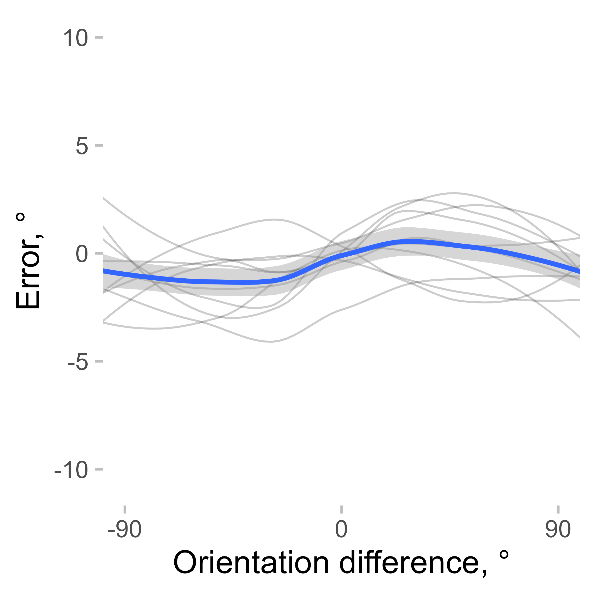
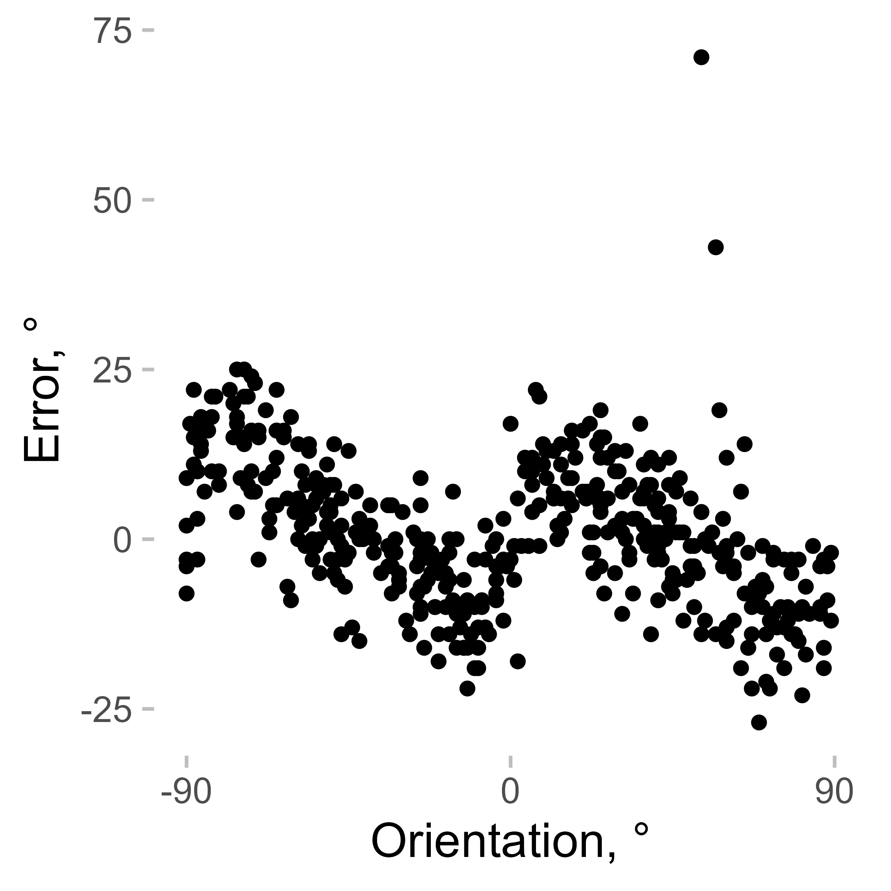

Correcting for cardinal biases to improve serial dependence estimates
Source:vignettes/cardinal_biases.Rmd
cardinal_biases.RmdThis is a small vignette showing how the correction for cardinal biases might be good for serial dependence (SD) studies. I will use the data from Experiment 2 in Pascucci et al. (2019, PLOS Biology, https://dx.doi.org/10.1371/journal.pbio.3000144) available from https://doi.org/10.5281/zenodo.2544946. First, I load the data, the required packages, and compute important variables.
# load the data
# data <- fread('https://zenodo.org/record/2544946/files/Experiment2_rawdata.csv?download=1')
data <- Pascucci_et_al_2019_data
data[, err := angle_diff_180(reported, orientation)] # response errors
data[, prev_ori := shift(orientation), by = observer] # orientation on previous trial
data[, diff_in_ori := angle_diff_180(prev_ori, orientation)] # shing in orientations between trialsThe responses in this data show a typical SD pattern with a bias
towards previous orientations. I use the pad_circ function
to account for circularity in the data when smoothing. It adds part of
the data from one end to another end of the variable range (e.g., the
data with the relative orientation from 60 to 90° are copied and pasted
to the data set with the new relative orientation values of -120 to
90°). This is not the perfect way to account for circularity, but it is
good enough for this kind of analysis. The thin lines show individual
observers, the thick blue line shows the average.
ggplot(pad_circ(data, "diff_in_ori"), aes(x = diff_in_ori, y = err)) +
geom_line(aes(group = observer), stat = "smooth", size = 0.4, color = "black", alpha = 0.2, method = "loess") +
geom_smooth(se = T, method = "loess") +
coord_cartesian(xlim = c(-90, 90)) +
scale_x_continuous(breaks = seq(-90, 90, 90)) +
labs(y = "Error, °", x = "Orientation difference, °")
#> `geom_smooth()` using formula = 'y ~ x'
#> `geom_smooth()` using formula = 'y ~ x'
But SD is not the only bias present. The orientation estimates usually show cardinal biases, that is, a repulsion effect with responses “repulsed away” from cardinal orientations. Here is an example observer where this pattern is clearly seen.
ggplot(data[observer == 4, ], aes(x = angle_diff_180(orientation, 0), y = err)) +
geom_point() +
coord_cartesian(xlim = c(-90, 90)) +
scale_x_continuous(breaks = seq(-90, 90, 90)) +
labs(y = "Error, °", x = "Orientation, °")
Cardinal biases (as any other biases) add noise to the data, but they can also mimic other biases, such as SD. For example, if an observer is presented by an 8° line followed by a 2° line, the estimates of the 2° line would be pushed towards 8° because of the cardinal bias, not because of SD (or not only because of it). It’s not necessarily a problem for a well-balanced design, but it’s better to remove them to be on the safe side.
remove_cardinal_biases removes the cardinal biases and
other similar orientation-dependent idiosyncrasies by fitting a set of
polynomials to the data and computing the residuals. In other words, it
tries to predict how the errors change on average with changes in
orientation and remove that dependence. In addition, it tries to
estimate which responses are outliers while accounting for changes in
response variance across orientations (see more in
?remove_cardinal_biases).
ex_subj_data <- data[observer == 4, ]
res <- remove_cardinal_biases(ex_subj_data$err, ex_subj_data$orientation, plots = "show")To illustrate how it works, we can plot some output from this function. The first plot shows the errors the same way as in the previous plot but adds the fitted polynomials to them. The second one shows the errors with the biases removed. The third one plots only the bias (disregarding the sign of the average error).
Then, we can check how SD estimates are affected by the removal of cardinal biases. For the sake of completeness, I also show the result of removing the mean error only (which is close to nothing).
First, for each observer, I compute a corrected error.
data[, err_corrected := remove_cardinal_biases(err, orientation)$be_c, by = observer]
data[, err_mean_corrected := angle_diff_180(err, circ_mean_180(err)), by = observer]Then, I plot these errors along with the raw errors as a function of the previous item orientation and plot them.
datam <- melt(data[!is.na(diff_in_ori)], id.vars = c("diff_in_ori", "observer"), measure.vars = c("err", "err_corrected", "err_mean_corrected"))
datam[, variablef := factor(variable, levels = c("err", "err_mean_corrected", "err_corrected"), labels = c("Raw error", "Mean-corrected", "Mean and cardinal bias removed"))]
datam[, err_rel_to_prev_targ := ifelse(diff_in_ori < 0, -value, value)]
ggplot(pad_circ(datam, "diff_in_ori"), aes(x = diff_in_ori, y = value)) +
geom_line(aes(group = observer), stat = "smooth", size = 0.4, color = "black", alpha = 0.2, method = "loess") +
geom_smooth(se = TRUE, method = "loess") +
facet_grid(~variablef) +
coord_cartesian(xlim = c(-90, 90), ylim = c(-5, 5)) +
scale_x_continuous(breaks = seq(-90, 90, 90)) +
labs(y = "Error, °", x = "Orientation difference, °")
#> `geom_smooth()` using formula = 'y ~ x'
#> `geom_smooth()` using formula = 'y ~ x'
To make things clearer, I plot SD as a function of absolute orientation differences.
ggplot(datam, aes(
x = abs(diff_in_ori),
y = err_rel_to_prev_targ,
color = variablef
)) +
geom_hline(linetype = 2, yintercept = 0) +
geom_smooth(se = TRUE, method = "loess") +
facet_grid(~variablef) +
coord_cartesian(xlim = c(0, 90)) +
theme(legend.position = "top") +
labs(color = NULL, y = "Bias towards previous targets", x = "Absolute orientation difference, °") +
scale_x_continuous(breaks = seq(0, 90, 30))
#> `geom_smooth()` using formula = 'y ~ x'
As you can see, when estimated using error corrected for cardinal bias, SD looks “better” in the sense that around zero (where no bias is expected), the SD is closer to zero, and there is also less of a bump around 90°. Correcting for cardinal biases also reduces the variability of the errors, making the SD effect more pronounced.